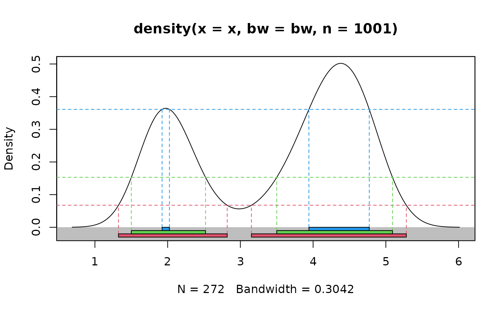
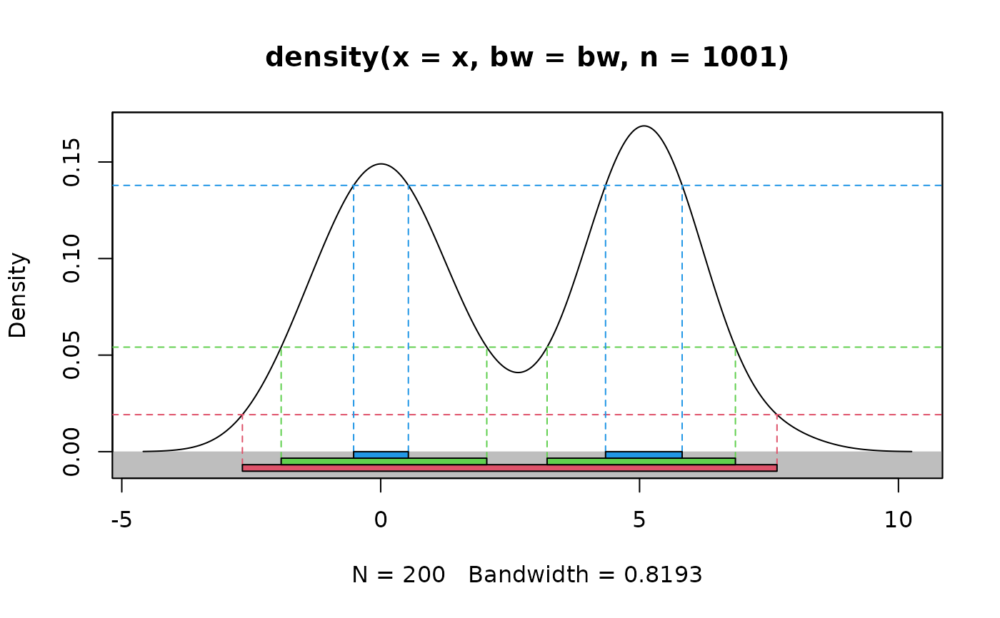

Plots univariate density with highest density regions displayed
Numeric vector containing data. If x is missing then
den must be provided, and the HDR is computed from the given density.
Probability coverage required for HDRs
Density of data as list with components x and y.
If omitted, the density is estimated from x using
density.
Optional bandwidth for calculation of density.
Box-Cox transformation parameter where 0 <= lambda <=
1.
Label for x-axis.
Label for y-axis.
Limits for y-axis.
If TRUE, will show how the HDRs are determined
using lines.
Colours for regions.
Colours for the background behind the boxes. Default "gray", if NULL no box is drawn.
If TRUE add a legend on the right of the boxes.
Other arguments passed to plot.
a list of three components:
The endpoints of each interval in each HDR
The estimated mode of the density.
The value of the density at the boundaries of each HDR.
Either x or den must be provided. When x is provided,
the density is estimated using kernel density estimation. A Box-Cox
transformation is used if lambda!=1, as described in Wand, Marron and
Ruppert (1991). This allows the density estimate to be non-zero only on the
positive real line. The default kernel bandwidth h is selected using
the algorithm of Samworth and Wand (2010).
Hyndman's (1996) density quantile algorithm is used for calculation.
Hyndman, R.J. (1996) Computing and graphing highest density regions. American Statistician, 50, 120-126.
Samworth, R.J. and Wand, M.P. (2010). Asymptotics and optimal bandwidth selection for highest density region estimation. The Annals of Statistics, 38, 1767-1792.
Wand, M.P., Marron, J S., Ruppert, D. (1991) Transformations in density estimation. Journal of the American Statistical Association, 86, 343-353.
# Old faithful eruption duration times
hdr.den(faithful$eruptions)

#> $hdr
#> [,1] [,2] [,3] [,4]
#> 99% 1.324565 2.819313 3.151104 5.281571
#> 95% 1.500936 2.520567 3.499998 5.091174
#> 50% 1.923099 2.024050 3.944733 4.770651
#>
#> $mode
#> [1] 4.380888
#>
#> $falpha
#> 1% 5% 50%
#> 0.06698765 0.15266929 0.36250571
#>
# Simple bimodal example
x <- c(rnorm(100,0,1), rnorm(100,5,1))
hdr.den(x)

#> $hdr
#> [,1] [,2] [,3] [,4]
#> 99% -2.0671328 7.251435 NA NA
#> 95% -1.6513989 6.833514 NA NA
#> 50% -0.3193019 1.281401 4.1585 5.405109
#>
#> $mode
#> [1] 0.420485
#>
#> $falpha
#> 1% 5% 50%
#> 0.05352469 0.06740055 0.10417686
#>